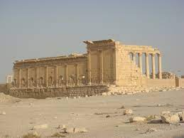
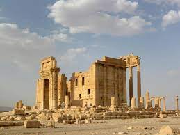
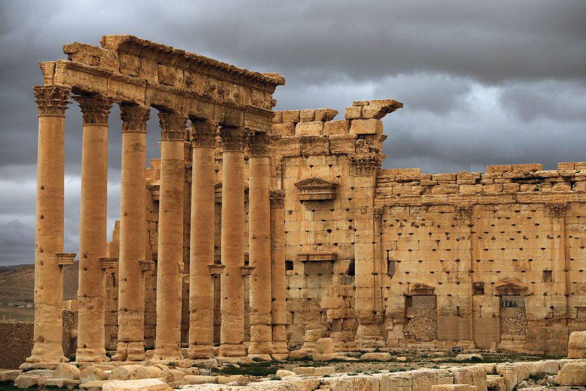

{% extends "layout.html" %}
{% block title %}
Palmyrene Temple
{% endblock %}
{% block main %}



Called variously the Temple of Bel and of the Palmyrene Gods, the temple which abuts Tower 1 has been extensively studied for the religious and art historical signficance of the findings there. Published in the preliminary report from the 2nd season of the excavation, further treatment of the many graffiti inscribedi on the tower walls has been limited (See Chapter 3 of Baird, Jennifer, and Taylor, Claire, eds. Ancient Graffiti in Context. London: Taylor & Francis Group, 2010 and “Foreigners at Dura-Europos: Pictorial Graffiti and History.” Goldman, B. Le Muséon 103, 1-2. 1990).
Dating the graffiti is difficult. Unlike on the gate, only a few letters are present which may represent dates (H.52b and H.53b), but they are hardly clear or conclusive. In the preliminary report, a general time frame of “Parthian” is offered, based on the pictures which accompany the text. In later research about the tower and temple, Jennifer Baird discusses Parthian presence in Dura and notes that “The relationship between Palmyra and Dura is attested by a range of evidence at Dura itself, starting in the first century BCE, when a temple was dedicated by Palmyrenes of two different tribes just outside the city” (Baird, Dura Europos, Chapter 2). While this puts the temple as dedicated in the 1st century CE and doesn’t contradict the report’s dating, the graffiti on the Tower may have been written much later. Baird elsewhere discusses how graffiti was common on fortifications, as soldiers stationed there may have had the time on duty to over the years mark up the walls they worked in (Baird, “Graffiti of Dura Europos,” 57). Some of the inscriptions seem distinctly unRoman, particularly H8 and H15, which are Palmyrene and Semitic names, respectively. In short, the graffiti could have been inscribed by a number of inhabitants in the city from the 1st century CE onward.
Many of the graffiti are very short, consisting of a name or a few letters. When a full sentence is inscribed, it is often in the same formulation: μνησθείης [Name]. The author of the preliminary report notes that this formula within the tower walls differ from those of the Main Gate. Specifically,, the second person optative form is used (“May you remember”) rather than the third person subjunctive syntax common on the Gate (“May [Name] be remembered”). In fact, the author notes that this optative form is an earlier form than the subjunctive used elsewhere in Dura (96). Baird notes that this formula with variations of μιμνήσκω is “Overall, this type of graffiti comprise almost 12 per cent of the total textual graffiti of the town, the largest proportion of any recognisable group” (Baird, “Graffiti of Dura Europos,” 56).
In addition to text, much pictoral graffiti is described in the report on the Tower. Due to the limits, of time and expertise, of the scholars working on this project, the scope of this website is limited only to the textual graffiti reported. Given that “just over 1,200 of almost 1,400 recorded graffiti at Dura were textual; of these, 89 per cent were Greek,” this is not a bad representation of the landscape of graffiti at Dura (Baird, “Graffiti of Dura Europos,” 52). Users should note, however, that some texts were found on or next to drawings carved into the tower walls, and therefore the full picture, so to speak, is not captured on this website.